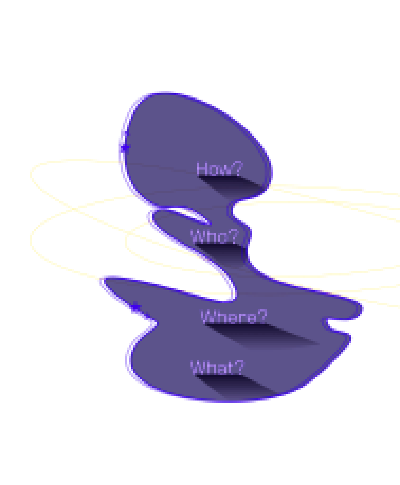
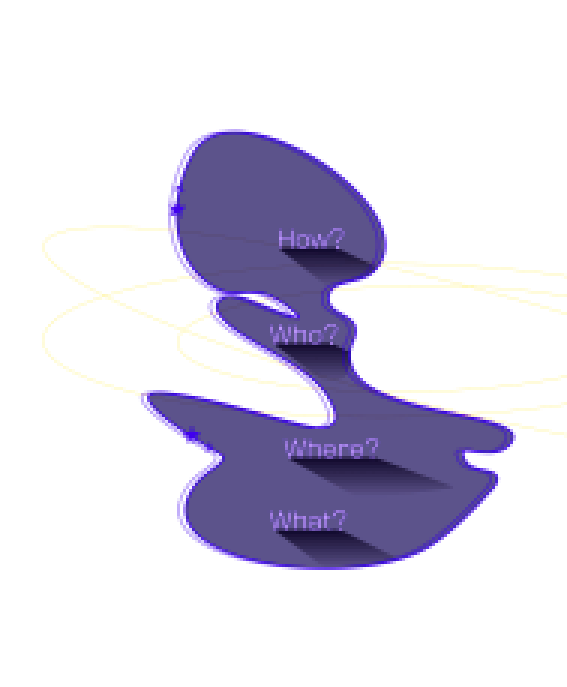

저 점이 우리가 있는 이곳입니다.
여러분이 사랑하는, 당신이 아는, 당신이 들어본, 그리고 세상에 존재했던
모든 사람들이 바로 저 작은 점 위에서 일생을 살았습니다.
여러분이 사랑하는, 당신이 아는, 당신이 들어본, 그리고 세상에 존재했던
모든 사람들이 바로 저 작은 점 위에서 일생을 살았습니다.
이 디스크를 발견한 외계 지적 생명체에게 우리의 목소리를 남깁니다.
저 작은 픽셀의 한 쪽 구석에서 온 사람들이 같은 픽셀의
다른 쪽에 있는, 겉모습이 거의 분간도 안되는 사람들에게
저지른 셀 수 없는 만행을 생각해보십시오.
다른 쪽에 있는, 겉모습이 거의 분간도 안되는 사람들에게
저지른 셀 수 없는 만행을 생각해보십시오.
얼마나 잦은 오해가 있었는지, 얼마나 서로를 죽이려고 했는지,
그리고 그런 그들의 증오가 얼마나 강했는지 생각해보십시오.
그리고 그런 그들의 증오가 얼마나 강했는지 생각해보십시오.
위대한 척하는 우리의 몸짓, 스스로 중요한 존재라고 생각하는
우리의 믿음, 우리가 우주에서 특별한 위치를 차지하고 있다는 망상은
저 창백한 파란 불빛 하나만 봐도 그 근거를 잃습니다.
우리의 믿음, 우리가 우주에서 특별한 위치를 차지하고 있다는 망상은
저 창백한 파란 불빛 하나만 봐도 그 근거를 잃습니다.
우리가 사는 지구는
우리를 둘러싼 거대한 우주의 암흑 속에 있는
외로운 하나의 점입니다.
우리를 둘러싼 거대한 우주의 암흑 속에 있는
외로운 하나의 점입니다.
- 칼 에드워드 세이건
Carl Edward Sagan
Carl Edward Sagan